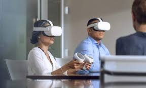
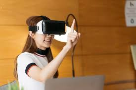

La tecnología de Realidad Virtual consiste en la inmersión del usuario en un mundo completamente sintético generado por ordenador, en el que sus sentidos dejan de percibir el mundo real, sumergiendo al usuario en un entorno alternativo.
Para disfrutar de una experiencia de realidad virtual se necesitan unas gafas especiales. Estas gafas pueden estar conectadas a un ordenador, ser totalmente portátiles o necesitar que se inserte un teléfono móvil dentro de la gafa.
Las gafas más potentes para disfrutar de experiencias de Realidad Virtual son las que se conectan a un ordenador de altas prestaciones, ya que permiten mucho más realismo y calidad gráfica en los entornos virtuales que se proponen al usuario.   ir a realidad aumentada ir a inteligencia artificial